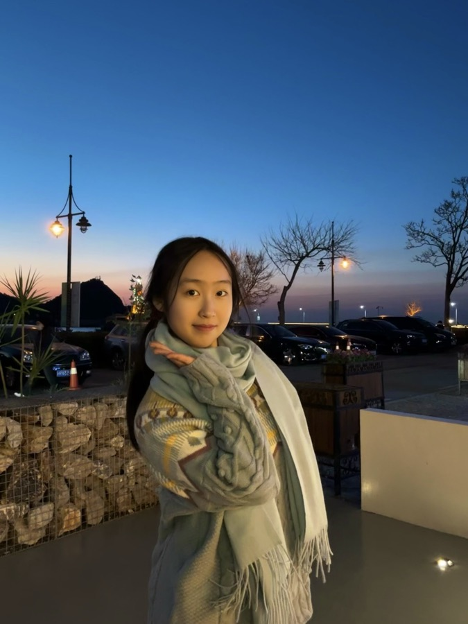
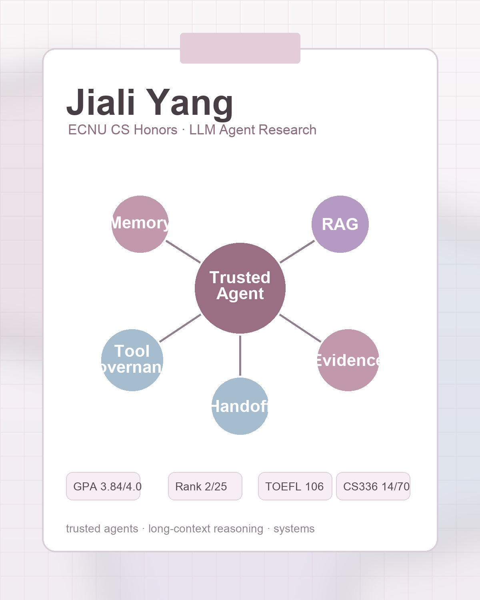
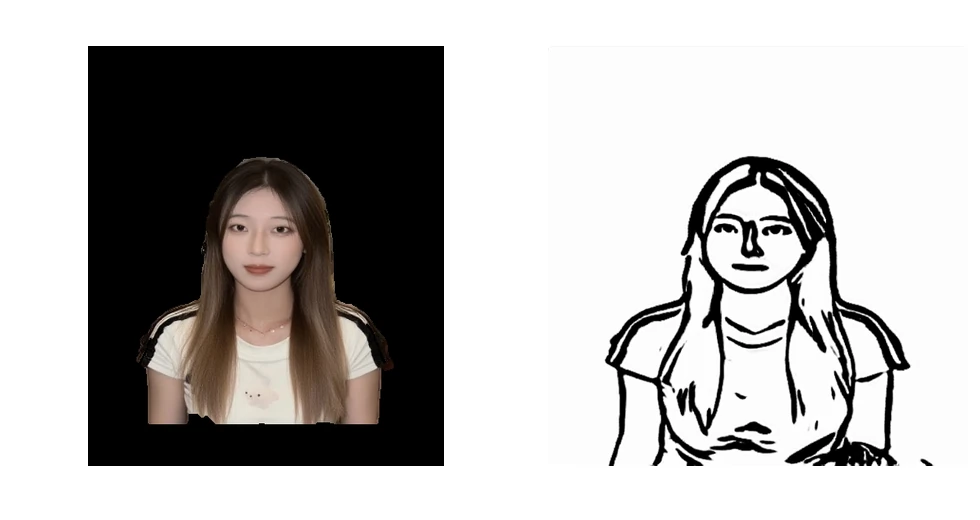
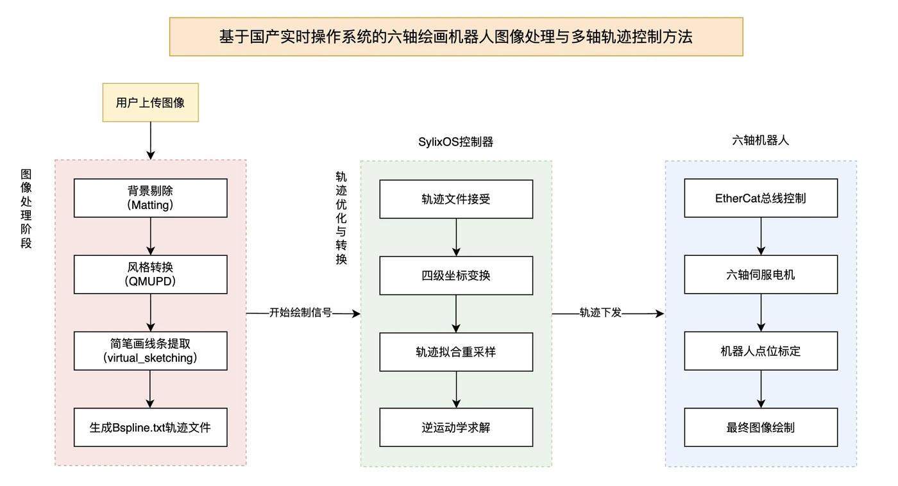
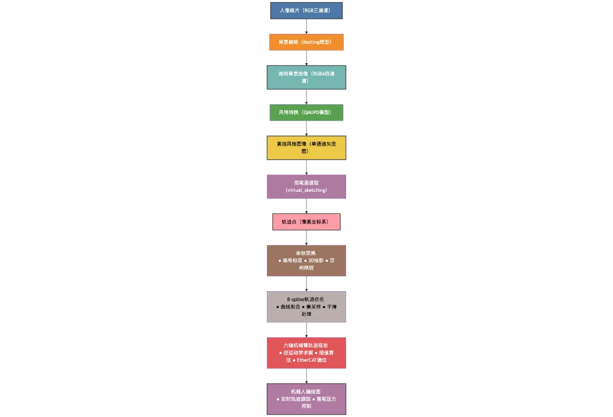
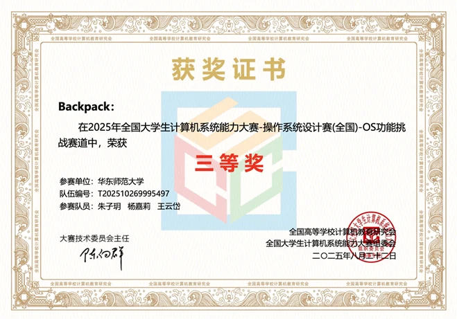

ECNU CS Honors · 2027
Hey, I'm 杨嘉莉 Kelly
关于我

华东师范大学
计算机科学拔尖班 · 本科 · 2023.09 - 2027.06
我关注可信智能体与多智能体协作、知识增强与长程推理、模型可靠性评测及高效推理系统；尤其关心复杂任务里的工具调用治理、执行轨迹审计与长期记忆机制。
研究关键词
Agent 架构 · RAG · 长程交互 · 可信评测
工程工具
Python · PyTorch · Transformers · Docker · Linux
↳ 把模型能力落到可运行、可审计、可复现的系统里
科研与实习经历
Agent reliability, memory, governance, and evidence tracking
项目经历
从底层系统移植到上层智能应用，把模型、协议栈和真实设备接成可运行的闭环。
基于 SylixOS 的六轴绘画机器人系统
国家级大学生创新训练项目。团队构建了一套融合国产实时操作系统、EtherCAT 工业通信、六轴机械臂运动控制与 AI 图像处理的自动绘画系统， 形成“图像输入 - 路径规划 - 实时控制 - 机器人绘制”的端到端链路。

AI 视觉处理将人物图像转换为可执行绘图路径我会这样讲这个项目
不把它只讲成“机器人会画画”，而是讲成一次系统工程：先把 IGH EtherCAT Master 移植到国产 SylixOS， 建立 1ms 周期主从通信，再在六轴机械臂上接入轨迹规划、安全状态机和图像到路径的 AI 流水线。
我的技术贡献
- 参与 EtherCAT 主站协议栈在 SylixOS 上的移植、编译与驱动适配。
- 完成伺服从站识别、PDO 映射、状态回读与周期通信链路验证。
- 参与机器人控制联调，围绕上电状态机、轨迹执行与稳定性问题做调试。



大语言模型系统构建
独立实现 BPE、Transformer Decoder、训练循环、采样生成与评估模块，完成从数据处理、模型预训练到推理评测的系统闭环。

面向多模态生成与实时执行的具身绘画机器人系统
参与构建图像生成、轨迹规划、实时通信与机械臂控制链路，重点推进 EtherCAT 协议栈在 SylixOS 上的移植与驱动适配。
腾讯云黑客松 · 智能渗透挑战赛决赛
参与构建以 LLM 为核心的自主渗透 Agent Harness，整理漏洞知识库、工具调用规范和结果校验流程。
Agent-in-the-Loop 微调数据集自动化构建
面向企业 BI 场景构建 instruction tuning 数据工程流程，设计 Planner、Generator、Critic、Verifier 与 Refiner 五阶段质量控制。
荣誉奖项
国家奖学金
同时获校优秀学生奖学金、校优秀学生等荣誉。
全国大学生计算机系统能力大赛
操作系统设计赛道国家三等奖。
腾讯云智能渗透挑战赛
所在团队进入决赛并获全国第五。
国家发明专利
扩散模型后门样本净化与防御相关专利，学生排名 2。